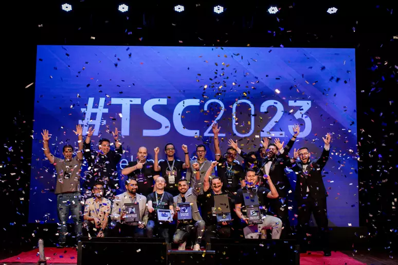

Brasil e Finlândia assinam colaboração em cibersegurança
Cooperação inclui inciativas como a troca de informações sobre incidentes, intercâmbio de experiências em políticas públicas e regulamentos por exemplo
Postado 06 de Junho de 2024
Brasil e Finlândia assinaram ontem um Memorando de Entendimento sobre Cooperação na Área de
Segurança Cibernética. O documento estabelece as bases para diferentes inciativas bilaterais, como a
troca de informações sobre incidentes no ambiente virtual, intercâmbio de experiências na formulação
de políticas públicas e regulamentos, além de ações de capacitação de técnicos, troca de
conhecimento entre especialistas e conscientização da sociedade sobre riscos “online”. O documento
foi assinado pelo general Augusto Heleno, Ministro-Chefe do Gabinete de Segurança Institucional da
Presidência da República e pelo ministro de Desenvolvimento e Comércio Exterior da Finlândia, Ville
Skinnari.
Durante o encontro, os dois ministros abordaram diferentes aspectos das relações entre os dois
países, em especial as ameaças atuais à segurança cibernética e a tecnologia “5G” num contexto de
crescentes tensões também no ambiente virtual. O ministro Skinarri apresentou elementos da
Estratégia Nacional de Segurança Cibernética da Finlândia, ao passo que o General Augusto Heleno
aludiu a iniciativas do GSI/PR nesse setor, como a Estratégia Nacional de Segurança Cibernética.
Na agenda bilateral, predominam tradicionalmente temas positivos e há interesse mútuo em expandir a
cooperação em áreas estratégicas. Os dois países compartilham preocupações com ataques cibernéticos
e possíveis interferências em processos eleitorais.
São Paulo sedia conferência de cibersegurança em setembro
A capital paulista se prepara para sediar a The Starti Conference 2024, uma das maiores conferências de cibersegurança e negócios do Brasil. O evento acontecerá nos dias 20 e 21 de setembro, contando com mais de 20 especialistas do mercado de segurança e privacidade para discutir os principais avanços em inteligência artificial (IA), novas tecnologias e cibersegurança no mundo dos negócios.
Postado 12 de Junho de 2024 Foto da ultima TSC.
A capital paulista se prepara para sediar a The Starti Conference 2024, uma das maiores conferências
de cibersegurança e negócios do Brasil. O evento acontecerá nos dias 20 e 21 de setembro, contando
com mais de 20 especialistas do mercado de segurança e privacidade para discutir os principais
avanços em inteligência artificial (IA), novas tecnologias e cibersegurança no mundo dos negócios.
Segundo pesquisas recentes, os investimentos globais em cibersegurança devem atingir US$ 187 bilhões
em 2024, um aumento de 12% em relação ao ano anterior. Este crescimento reflete a crescente
conscientização sobre a importância de proteger dados e infraestruturas digitais, especialmente em
um cenário onde as ameaças cibernéticas se tornam cada vez mais sofisticadas.
Apesar disso, em 2023 o Brasil enfrentou uma onda significativa de ataques ransomware, um
crescimento de 8% no número de ataques, em comparação aos números de 2022, segundo a Check Point.
Dados como esse revelam a insegurança e vulnerabilidade que as empresas brasileiras ainda enfrentam.
Diante de tal cenário, a TSC 2024 apresentará trará uma nova abordagem e as tendências mais recentes
de cibersegurança, propondo estratégias para auxiliar empresários, executivos e gestores de
tecnologia a proteger seus negócios.
Para discutir as temáticas e propor essas soluções, o evento receberá nomes como: Arthur Sabbat,
Diretor da Associação Nacional de Proteção de Dados (ANPD), João Lucas Brasio, CEO da Elytron
Security, Daniel Donda, Influenciador e CEO da Hackers Hive, o especialista internacional Glauco
Sampaio (CISO CIELO) e Marcelo Leal, Product VP at Skie.io.
Além disso, o evento contará com 2 palcos simultâneos, palestra internacional com tradução
simultânea, painéis de discussão e o Business Hall, com uma exposição 360° de soluções inovadoras e
oportunidades de networking com as principais marcas do mercado.
Os interessados em participar da The Starti Conference 2024 poderão garantir seu ingresso no site
oficial do evento, escolhendo entre duas modalidades, o Global Pass e o VIP Pass, que possibilita
uma experiência exclusiva, incluindo acesso à Área VIP, coquetéis e almoços de networking.
Os dados aqui apresentados e o aumento constante de ameaças digitais reforçam a importância de
eventos como este para equipar as empresas e profissionais brasileiros com o conhecimento necessário
para se protegerem de ataques e garantirem a continuidade de seus negócios.
A The Starti Conference 2024 é realizada pela Starti, empresa de software de cibersegurança focada
em PMEs, que trabalha com o propósito de descomplicar a cibersegurança pelo Brasil e no mundo.
Para mais detalhes sobre a programação completa e ingressos, basta acessar https://tsc.starti.com.br.
Postagens Recentes
Elden Ring: Shadow of the Erdtree deve ter entre 30 a 40 horas de conteúdo inédito
No X, usuário fez um compilado sobre as informações já divulgadas sobre a expansão
Leia maisGTA 6 será lançado em 2025, confirma Rockstar
O aguardado trailer do novo GTA foi revelado em dezembro do ano passado, trazendo um breve olhar para a sequência e muitas novidades instigantes que atiçaram o hype dos fãs.
Leia mais